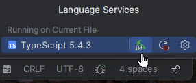
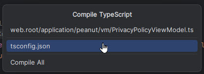

The acronym LAMP originally referred to Linux-Apache-MySQL-Perl. Now it is used generically to refer to similar combinations. For instance most now substitute PHP for Perl, sometimes MariaDB for MySQL, sometimes nginx for Apache. And there are versions for OSes other than Linux.
In our case the following services must be included:
These are availble in several forms, select one of the following.
Full stack PHP / Typescript development environment . Individual subscription is $99 for first year and decreases in subsequent years.
see: https://www.jetbrains.com/phpstorm/buy/?section=personal&billing=yearly
If you have an affiliation with a college or university (student, instructor...) you may be able to
obtain a free copy.
see: https://www.jetbrains.com/phpstorm/buy/?section=discounts&billing=yearly
Visual Studio Code is Microsoft's free code editor based on Visual Studio. You can download and install it from the Microsoft Store. It is very capable, but you'll need to do additional configuration for PHP and Typescript support.
Additionally you'll need these additional free tools. They can be installed individually using NPM or may come with your development IDE such as PHPStorm.
Optional:
You'll need some files stored on our web server. We'll provide FTP credentials.
Here are the steps you will take.
See this article for installing and configuring TypeScript
https://www.typescriptlang.org/download/
If typescript is installed to run at the command line, change to the project root directory, where the tsconfig.json is located, and simply run "tsc".
> tscIf using PhpStorm with the bundled version of typescript, follow these steps:


Once you have compiled all the files, the IDE will automatically recompile individual files when they are changed.
Configuration files checked out from the repository will usually be suitable for your development environment. However, here is a quick summary in case you need to make changes.
All the files discussed below are located in the \application\config folder.
The setting in this file of most concern to the developer is the "tops.mailer" section. Developers will want a mail handler for testing that does not really send messages.
The two choices are 'TDevMailer' or 'TNullMailer'
; use null mailer to disable mail service
;type='Tops\mail\TNullMailer'
;singleton=1
; writes messages to the maildrop directory
type='Tops\mail\TDevMailer'
singleton=1TNullMailer disables mail services. It does nothing and raises no errors.
TDevMailer writes the messages to a maildrop directory where the developer can open them in a browser to examine the contents. The directory must be created in advance. The default location is "maildrop" in the project route. The location can be overridden by a setting in application/config/settings.ini. See below.
[locations]
; composer='./vendor'The composer setting determines the location of the vendor folder relative to the document root (web.root). If the setting is commented out or not present the default is '../vendor'. This is consistent with our standard set up but if you have multiple vendor folders or use different location, you can change it.
[mail]
; maildrop='\dev\fma\tmp\mail'By default TDevMailer writes files to the 'maildrop' directory in your project directory. If you prefer a different location you can override the setting here.
This file is created by the ConcreteCMS installation when you enter database information. If you need to edit the file to point to a different database, go right ahead and ignore the "DO NOT EDIT THIS FILE DIRECTLY" warning.
configuration:
'database' => 'austinqu_fma',
'username' => 'austinqu_dba',
'password' => 'F0xS@ysN0W@r',
'character_set' => 'utf8mb4',(These instructions apply to the Apache server only.)
After your LAMP stack is installed, check these Apache and PHP configuration files. You will need to point to the web.root directory as your document root. In the examples below we use "d:/projects/fma/web.root". Replace this with the full path to web.root on your machine
There are two appoaches.
To use the default document root, change this entry in httpd.conf:
DocumentRoot "d:/projects/fma/web.root"
<Directory "d:/projects/fma/web.root">
Options +Indexes +FollowSymLinks +Multiviews
AllowOverride all
Require local
</Directory>Using this option you can open your dev site in a browser with:
http://localhostThe second option is especially useful if you have multiple web sites to test or if you are using localhost for other purposes. For example, in Wampserver localhost is used for access to several utilities.
To configure your site as a VHost...
Leave the document root definition as is and add an additional
# local.austinquakers.org
<Directory "d:/projects/fma/web.root">
Options Indexes FollowSymLinks
AllowOverride all
Require all granted
</Directory>
Make sure the following settings are enabled.
LoadModule vhost_alias_module modules/mod_vhost_alias.so
# Virtual hosts
Include conf/extra/httpd-vhosts.conf
If you do not have a httpd-vhosts.conf file in conf/extra, create one.
Add the following settings:
# localhost
# Change the path if your localhost document root is elsewhere.
<VirtualHost _default_:80>
ServerName localhost
ServerAlias localhost
DocumentRoot "${INSTALL_DIR}/www"
<Directory "${INSTALL_DIR}/www/">
Options +Indexes +Includes +FollowSymLinks +MultiViews
AllowOverride All
Require local
</Directory>
</VirtualHost>
<VirtualHost *:80>
ServerName local.austinquakers.org
DocumentRoot "d:/projects/fma/web.root"
</VirtualHost>As a final step, update your "hosts" file. Usually found at C:\Windows\System32\drivers\etc\hosts.
Add this line.
127.0.0.1 local.austinquakers.orgOnce all this is complete you can your development site like this:
http://local.austinquakers.orgNote that we did not use https: as we would on a production site. You can change this by installing open ssl on the local web server.
Check your php.ini file for these settings:
If you will be doing any PHP debugging you will need to install XDebug for PHP. XDebug 3 is preferred. Many LAMP stacks such as WampServer come with XDebug pre-installed. If you are not sure, open info.php in the browser and look for the XDebug section. The info.php file contains just this:
<?php
phpinfo();For Windows use the XDebug installation wizard to generate installation instructions:
https://xdebug.org/wizard
On Linux you may use the PECL PHP extension manager. Here are instrucitons for Linux https://dev.to/xxzeroxx/how-to-install-and-configure-xdebug-in-linux-36h8
On Mac OS you can use homebrew:
https://blog.scriptmint.com/installing-xdebug-3-on-macos-and-debug-in-vs-code-912f0d728005
See these instructions for PhpStorm: https://www.jetbrains.com/help/phpstorm/configuring-xdebug.html
https://dev.to/yongdev/how-to-debug-php-using-xdebug-on-vscode-3n4
Our unit tests are under (project root)/tests and are run using PHPUnit 11.5. We have included a copy of phpunit.phar,
the PHP archive used to run phpunit, in the (project root)/bin directory.
The "bootstrap" script that sets up the PHP environment for running our tests is tests\unit\inittesting.php
A typical command line to run the tests contained in one file would look like this:
php bin\phpunit.phar --bootstrap tests\unit\inittesting.php tests\unit\DatabaseTest.phpThis assumes your php.exe for 8.2 is in your command serch path. If not, include the full path, e.g.
C:\wamp64\bin\php\php8.2.26\php.exe bin\phpunit.phar --bootstrap tests\unit\inittesting.php tests\unit\DatabaseTest.phpThe PHPUnit support in PhpStorm allows step debugging of unit tests as well as running them. Be sure to enable the "Default bootstrap file:" and set the full path to "tests\unit\inittesting.php"
There are several VS Code extenions that support running and debugging PhpUnit tests.
We have not tested these so please give us feedback on your experience if you try one of them out:
PHPUnit Extension, Elon Mallin:
https://marketplace.visualstudio.com/items?itemName=emallin.
PHPUnit Test Explorer, Run your PHPUnit OR Pest tests in Node using the Test Explorer UI.
https://marketplace.visualstudio.com/items?itemName=recca0120.vscode-phpunit
Better PHPUnit
https://marketplace.visualstudio.com/items?itemName=calebporzio.better-phpunit
VSCode-Docker-PHPUnit,
https://marketplace.visualstudio.com/items?itemName=eric-c-hansen.vscode-docker-phpunit